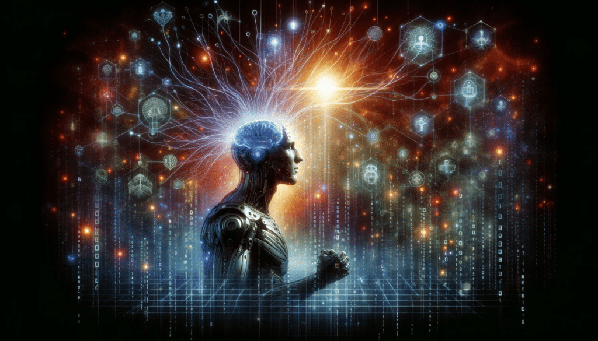

La inteligencia artificial (IA) es la simulación de inteligencia humana que crea algoritmos y sistemas informáticos capaces de ejecutar tareas simples y complejas que realizan las personas. Se basa en la idea de que una máquina puede programarse para imitar la forma en que un ser humano piensa y actúa.
La inteligencia artificial actualmente puede lograr diferentes tareas como reconocimiento de patrones, toma de decisiones y resolución de problemas. A pesar de los pronósticos negativos, se predice que esta industria será responsable de crear el 9 % de todos los empleos nuevos para 2025.

El alto impacto de la IA en 2024
Cómo funciona la inteligencia artificial
La inteligencia artificial funciona a través de la implementación de algoritmos y técnicas en sistemas informáticos, los cuales permiten que una máquina o dispositivo aprenda de los datos y mejore su rendimiento a medida que se expone a más información.
Es importante tomar en consideración que no toda la inteligencia artificial es igual; de hecho actualmente hay diferentes tipos, con su propio enfoque y métodos. Por ejemplo, la IA basada en reglas utiliza un conjunto predefinido de normas para tomar decisiones, mientras que la IA basada en aprendizaje automático (machine learning) usa algoritmos supervisados o no, para aprender de los datos y mejorar su rendimiento.